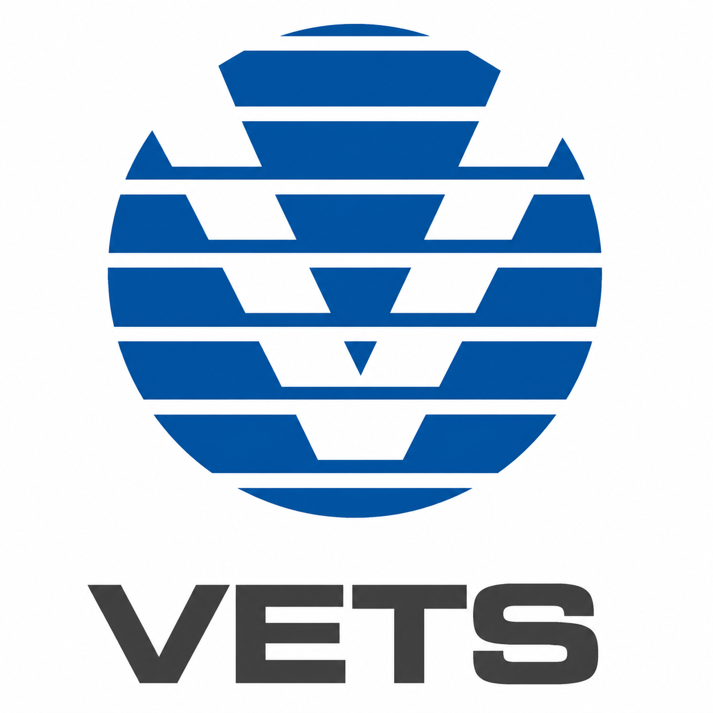
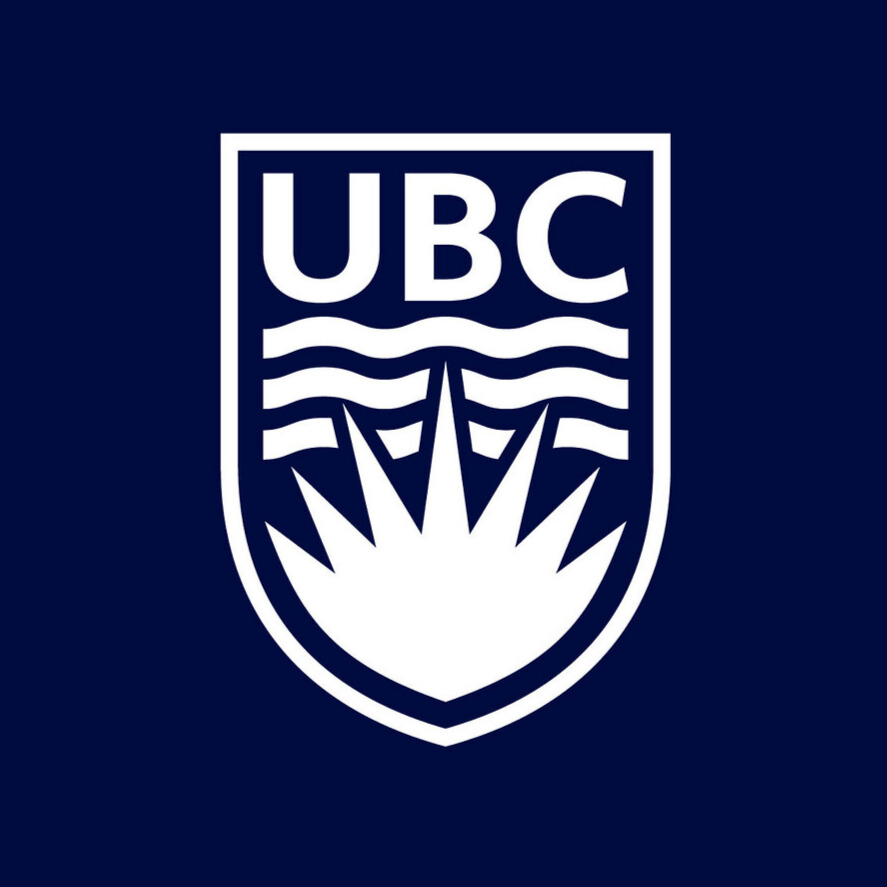
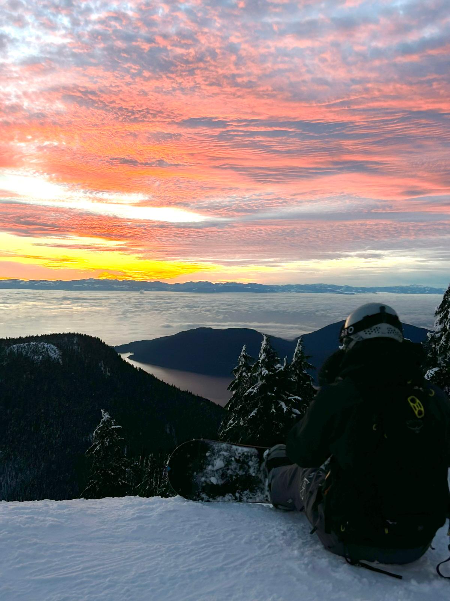
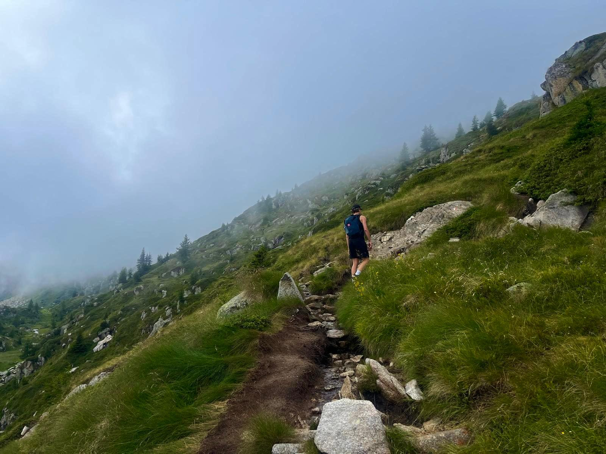
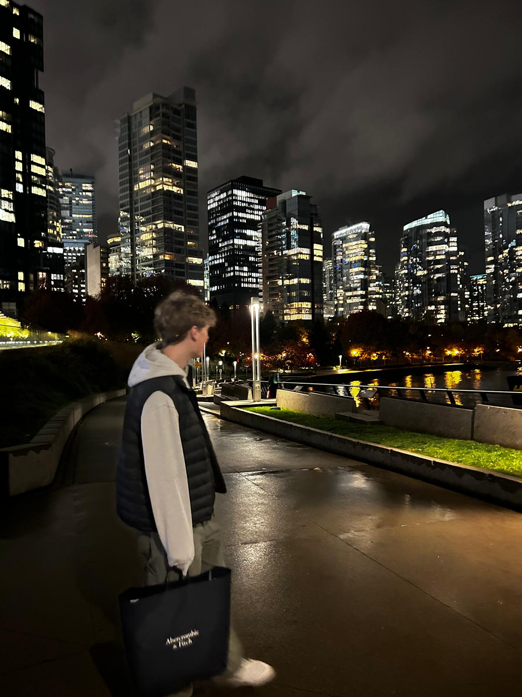
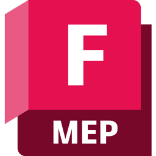
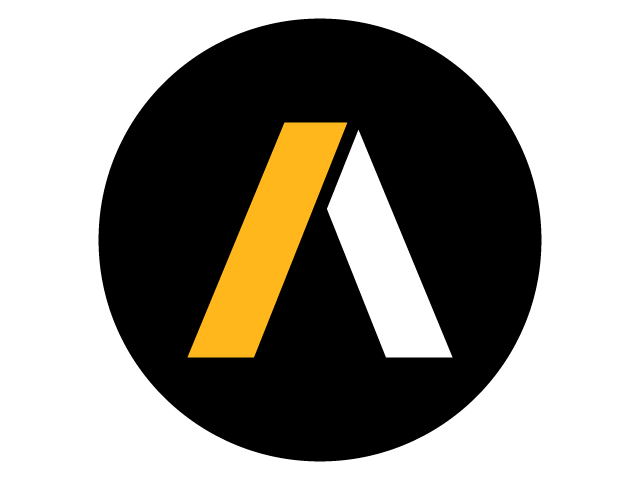
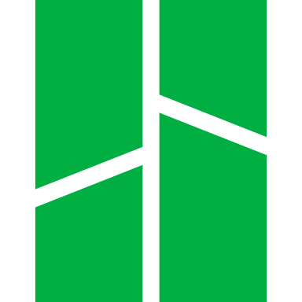
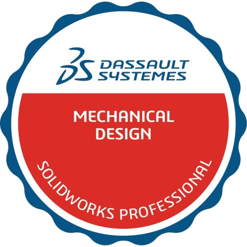
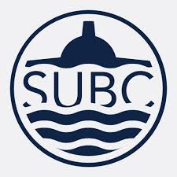

May 2026 — Present
Mechanical Engineering Intern

VETS GroupSupporting mechanical engineering work on industrial ventilation, HVAC, and dust collection projects.
Vancouver, BC
Mechanical & mechatronics engineering @

Currently into robotics, AR/VR, computer vision, and anything that challenges me.



I modelled the entire arm myself in SolidWorks and 3D printed every part from scratch — base, links, joints and gripper, no kit involved. It runs on servos off an Arduino, and I'm teleoperating it with Oculus Touch controllers: move your hand, the arm follows.


 SolidWorks
SolidWorks
 AutoCAD
AutoCAD

CADmep Python
Python
 C / C++
C / C++
 MATLAB
MATLAB
 Arduino
Arduino
 OpenCV
OpenCV

FEA
3D Printing React Native
React Native
 Git / GitHub
Git / GitHub

CSWP — Certified SolidWorks Professional Dassault Systèmes · advanced part modelling, configurations, and design changes. CSWA — Certified SolidWorks Associate
Dassault Systèmes · part modelling, assemblies, and drawing fundamentals.
CSWA — Certified SolidWorks Associate
Dassault Systèmes · part modelling, assemblies, and drawing fundamentals.

VETS GroupSupporting mechanical engineering work on industrial ventilation, HVAC, and dust collection projects.

SUBC — UBC Submarine Design TeamDesigning and manufacturing the human-powered drivetrain for our competition submarine. Cut gearbox weight in half and eliminated output gear slippage.
A decade of live-action and animated productions, starting at age eight. On pause while I'm at UBC.
Coordinating volunteers, sponsors, and route planning for my community's annual run — contributing to over $50,000 raised for cancer research.
Each one has its own page with photos, drawings, and a description you can switch between a quick summary and the full technical write-up.

Human-powered drivetrain for UBC's competition submarine — 50% lighter gearbox, zero gear slippage.
View project →
An Arduino claw that senses an object's distance and grips it without input.
View project →
A group accountability app built in 24 hours on 2 Red Bulls and under an hour of sleep.
View project →Aggregates postings from the Greenhouse and Lever APIs into one filterable dashboard.
View project →Want to talk about new ideas, engineering, sports, or literally anything else? I'm always up for it.